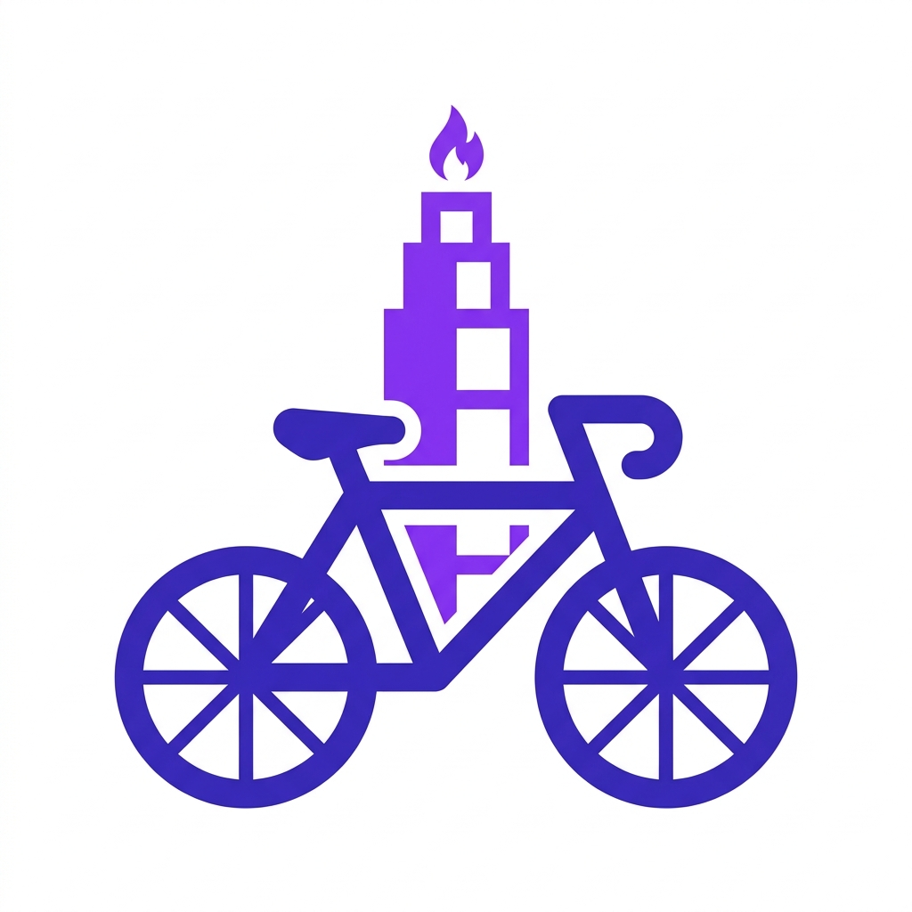

Saltar al mapa
Saltar a lista de estaciones
Reportar Incidencia
✕
Estación:
...
Bici dañada
Anclaje bloqueado
Pantalla / Tótem
Limpieza / Entorno
Detalles adicionales del reporte
Adjuntar Foto
Enviar Incidencia
Dashboard de la Red
Red en tiempo real
✕

Pedal
IA
Dashboard
Buscar estaciones
Todas
★ Favoritas
Con Bicis
Con Huecos
Estaciones de la red
Cargando estaciones...